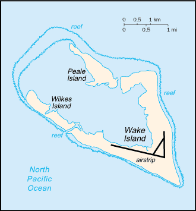
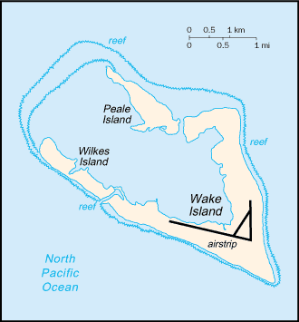

Australia-Oceania :: WAKE ISLAND
Introduction :: WAKE ISLAND
-
The US annexed Wake Island in 1899 for a cable station. An important air and naval base was constructed in 1940-41. In December 1941, the island was captured by the Japanese and held until the end of World War II. In subsequent years, Wake became a stopover and refueling site for military and commercial aircraft transiting the Pacific. Since 1974, the island's airstrip has been used by the US military, as well as for emergency landings. Operations on the island were temporarily suspended and all personnel evacuated in 2006 with the approach of super typhoon IOKE (category 5), but resultant damage was comparatively minor. A US Air Force repair team restored full capability to the airfield and facilities, and the island remains a vital strategic link in the Pacific region.
Geography :: WAKE ISLAND
-
Oceania, atoll in the North Pacific Ocean, about two-thirds of the way from Hawaii to the Northern Mariana Islands19 17 N, 166 39 EOceaniatotal: 6.5 sq kmland: 6.5 sq kmwater: 0 sq kmcountry comparison to the world: 247about 11 times the size of the National Mall in Washington, DC0 km19.3 kmterritorial sea: 12 nmexclusive economic zone: 200 nmtropicalatoll of three low coral islands, Peale, Wake, and Wilkes, built up on an underwater volcano; central lagoon is former crater, islands are part of the rimmean elevation: NAelevation extremes: lowest point: Pacific Ocean 0 mhighest point: unnamed location 8 mnoneagricultural land: 0%arable land 0%; permanent crops 0%; permanent pasture 0%forest: 0%other: 100% (2011 est.)0 sq km (2012)subject to occasional typhoonspotable water obtained through a catchment rainwater system and a desalinization plant for brackish ground water; hazardous wastes moved to an accumulation site for storage and eventual transport off site via bargestrategic location in the North Pacific Ocean; emergency landing location for transpacific flights
People and Society :: WAKE ISLAND
-
no indigenous inhabitantsnote: approximately 150 military personnel and civilian contractors maintain and operate the airfield and communications facilities (2009)
Government :: WAKE ISLAND
-
conventional long form: noneconventional short form: Wake Islandetymology: although first discovered by British Captain William WAKE in 1792, the island is named after British Captain Samuel WAKE who rediscovered the island in 1796unorganized, unincorporated territory of the US; administered from Washington, DC, by the Department of the Interior; activities in the atoll are currently conducted by the US Air ForceUS common lawsee United Statesthe flag of the US is used
Economy :: WAKE ISLAND
-
Economic activity is limited to providing services to military personnel and contractors located on the island. All food and manufactured goods must be imported.
Communications :: WAKE ISLAND
-
general assessment: satellite communications; 2 Defense Switched Network circuits off the Overseas Telephone System (OTS); located in the Hawaii area code - 808American Armed Forces Radio and Television Service (AFRTS) provides satellite radio/TV broadcasts (2009)
Transportation :: WAKE ISLAND
-
1 (2013)country comparison to the world: 211total: 12,438 to 3,047 m: 1 (2013)none; two offshore anchorages for large shipsthere are no commercial or civilian flights to and from Wake Island, except in direct support of island missions; emergency landing is available
Military and Security :: WAKE ISLAND
-
defense is the responsibility of the US; the US Air Force is responsible for overall administration and operation of the island facilities; the launch support facility is administered by the US Missile Defense Agency (MDA)
Transnational Issues :: WAKE ISLAND
-
claimed by Marshall Islands